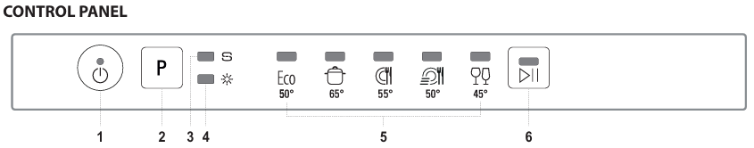
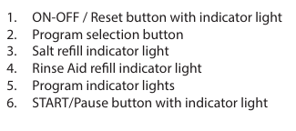
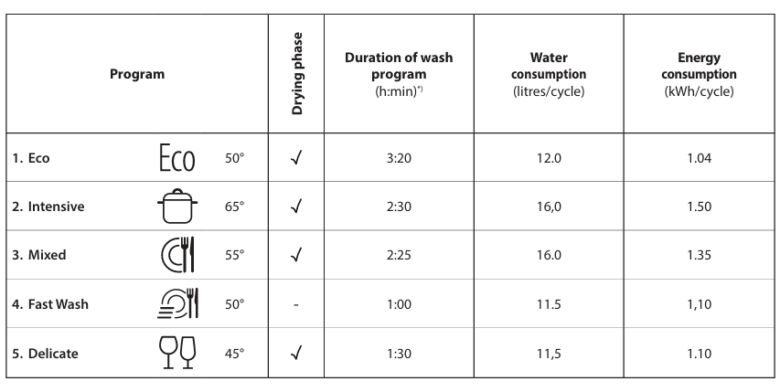
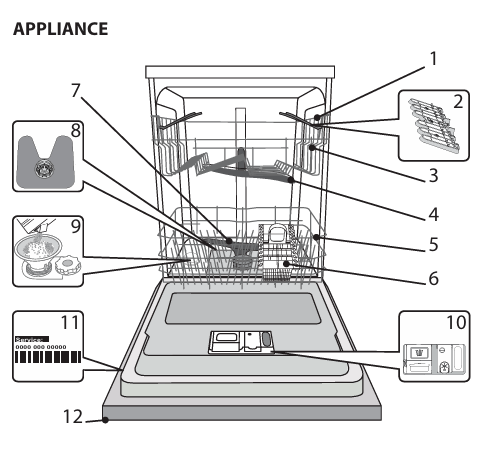
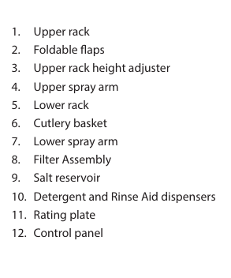
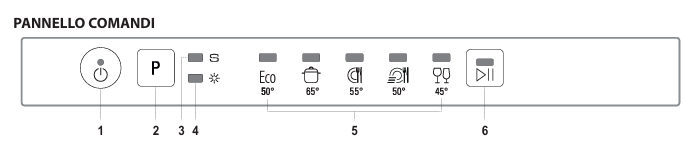
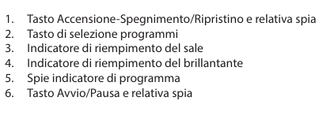
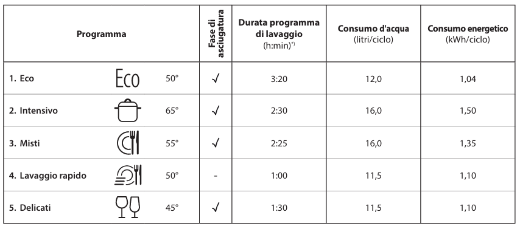
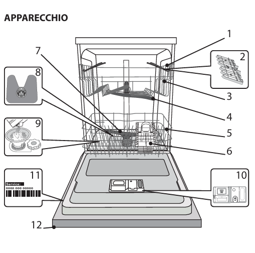
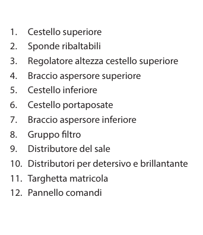

Dishwasher
Description
- Upper basket: for lightly soiled and delicate items such as glasses, cups, saucers and shallow bowls.
- Lower basket: for pots, lids, plates, salad bowls and large items.
- Cutlery basket: for cutlery and small items.
- Dispensers: for detergent and rinse aid.


Daily use
- Switch on: open the door and press the on/off button.
- Load the baskets as described above.
- Detergent: put it in the dispenser.
- Programme: choose it with the P button.
- Start: press start/pause and close the door within 4 seconds. A beep confirms the start.
Programmes
- Eco: normally soiled dishes; the most efficient in water and energy.
- Intensive: heavily soiled dishes and pots (not for delicate items).
- Mixed: normally soiled dishes with dried-on food.
- Quick wash: a small load of normally soiled dishes, in less time.
- Delicate: items sensitive to high temperatures, such as glasses and cups.

End of the cycle
- End: a beep signals the end of the cycle.
- Switch off: open the door and press the on/off button if it is still flashing.
- Unloading: wait a few minutes to avoid burns, then empty the lower basket first, then the upper one.
Tips
- Energy saving: run the dishwasher only when full.
- Adding dishes: open the door, press start/pause, add the dishes and close the door within 4 seconds.
- Changing programme: switch the dishwasher off, then on again, and choose the new programme.
Troubleshooting
- Salt light on: the salt tank is empty; refill it with dishwasher salt.
- Rinse-aid light on: the rinse-aid container is empty; refill it with dishwasher rinse aid.
- It does not start: check that it is plugged in and the door is properly closed.
- Too noisy: arrange the dishes so they do not block the spray arms.
- Dishes not clean: check how the dishes are arranged, the detergent, and that the filters are not clogged.


If you have any problem, contact the host, Alessandro.
Lavastoviglie
Descrizione
- Cestello superiore: per stoviglie poco sporche e delicate come bicchieri, tazze, piattini e insalatiere basse.
- Cestello inferiore: per pentole, coperchi, piatti, insalatiere e stoviglie grandi.
- Cestello portaposate: per posate e piccoli oggetti.
- Distributori: per detersivo e brillantante.


Uso quotidiano
- Accensione: apri lo sportello e premi il tasto accensione/spegnimento.
- Carica i cestelli come descritto sopra.
- Detersivo: mettilo nel distributore.
- Programma: scegli quello che vuoi con il tasto P.
- Avvio: premi avvio/pausa e chiudi lo sportello entro 4 secondi. Un segnale acustico conferma l'avvio.
Programmi
- Eco: stoviglie normalmente sporche; il più efficiente per acqua ed energia.
- Intensivo: stoviglie e pentole molto sporche (non per pezzi delicati).
- Misti: stoviglie normalmente sporche con residui secchi.
- Lavaggio rapido: carico ridotto di stoviglie normalmente sporche, in meno tempo.
- Delicati: oggetti sensibili alle temperature alte, come bicchieri e tazze.

Fine del ciclo
- Fine: un segnale acustico indica la fine del ciclo.
- Spegnimento: apri lo sportello e premi il tasto accensione/spegnimento se lampeggia ancora.
- Scarico: aspetta qualche minuto per non scottarti, poi svuota prima il cestello inferiore e poi quello superiore.
Consigli
- Risparmio energetico: avvia la lavastoviglie solo a pieno carico.
- Aggiungere stoviglie: apri lo sportello, premi avvio/pausa, aggiungi le stoviglie e richiudi entro 4 secondi.
- Cambiare programma: spegni la lavastoviglie, riaccendila e scegli il nuovo programma.
Problemi
- Spia del sale accesa: il serbatoio del sale è vuoto; riempilo con sale per lavastoviglie.
- Spia del brillantante accesa: la vaschetta è vuota; riempila con brillantante per lavastoviglie.
- Non parte: controlla che sia collegata alla corrente e che lo sportello sia ben chiuso.
- Troppo rumore: sistema le stoviglie in modo che non blocchino i bracci rotanti.
- Stoviglie non pulite: controlla la disposizione delle stoviglie, il detersivo e che i filtri non siano intasati.


Se riscontri problemi, contatta l’host, Alessandro.
Lavavajillas
Descripción
- Cesta superior: para vajilla poco sucia y delicada como vasos, tazas, platillos y ensaladeras bajas.
- Cesta inferior: para ollas, tapas, platos, ensaladeras y piezas grandes.
- Cesta de cubiertos: para cubiertos y objetos pequeños.
- Dispensadores: para detergente y abrillantador.
Los esquemas están en italiano.
Uso diario
- Encendido: abre la puerta y pulsa el botón de encendido/apagado.
- Carga las cestas como se describe arriba.
- Detergente: ponlo en el dispensador.
- Programa: elígelo con el botón P.
- Inicio: pulsa inicio/pausa y cierra la puerta antes de 4 segundos. Un pitido confirma el inicio.
Programas
- Eco: vajilla con suciedad normal; el más eficiente en agua y energía.
- Intensivo: vajilla y ollas muy sucias (no para piezas delicadas).
- Mixto: vajilla con suciedad normal y restos secos.
- Lavado rápido: carga reducida con suciedad normal, en menos tiempo.
- Delicado: piezas sensibles a las altas temperaturas, como vasos y tazas.
Fin del ciclo
- Fin: un pitido indica el final del ciclo.
- Apagado: abre la puerta y pulsa el botón de encendido/apagado si todavía parpadea.
- Descarga: espera unos minutos para no quemarte; vacía primero la cesta inferior y luego la superior.
Consejos
- Ahorro de energía: pon el lavavajillas solo con carga completa.
- Añadir vajilla: abre la puerta, pulsa inicio/pausa, añade la vajilla y cierra antes de 4 segundos.
- Cambiar de programa: apaga el lavavajillas, vuelve a encenderlo y elige el nuevo programa.
Problemas
- Luz de la sal encendida: el depósito de sal está vacío; rellénalo con sal para lavavajillas.
- Luz del abrillantador encendida: el depósito está vacío; rellénalo con abrillantador para lavavajillas.
- No arranca: comprueba que está enchufado y que la puerta está bien cerrada.
- Demasiado ruido: coloca la vajilla de modo que no bloquee los brazos giratorios.
- Vajilla no limpia: revisa la colocación de la vajilla, el detergente y que los filtros no estén obstruidos.
Si tienes algún problema, contacta con el anfitrión, Alessandro.
Lave-vaisselle
Description
- Panier supérieur : pour la vaisselle peu sale et fragile comme les verres, tasses, soucoupes et saladiers bas.
- Panier inférieur : pour les casseroles, couvercles, assiettes, saladiers et grosses pièces.
- Panier à couverts : pour les couverts et les petits objets.
- Distributeurs : pour le détergent et le liquide de rinçage.
Les schémas sont en italien.
Utilisation quotidienne
- Allumage : ouvrez la porte et appuyez sur la touche marche/arrêt.
- Chargez les paniers comme décrit ci-dessus.
- Détergent : mettez-le dans le distributeur.
- Programme : choisissez celui que vous voulez avec la touche P.
- Démarrage : appuyez sur départ/pause et fermez la porte dans les 4 secondes. Un signal sonore confirme le démarrage.
Programmes
- Eco : vaisselle normalement sale ; le plus économe en eau et en énergie.
- Intensif : vaisselle et casseroles très sales (pas pour les pièces fragiles).
- Mixte : vaisselle normalement sale avec des résidus secs.
- Lavage rapide : charge réduite de vaisselle normalement sale, en moins de temps.
- Délicat : objets sensibles aux hautes températures, comme les verres et les tasses.
Fin du cycle
- Fin : un signal sonore indique la fin du cycle.
- Arrêt : ouvrez la porte et appuyez sur la touche marche/arrêt si elle clignote encore.
- Déchargement : attendez quelques minutes pour ne pas vous brûler, puis videz d’abord le panier inférieur, puis le supérieur.
Conseils
- Économie d’énergie : ne lancez le lave-vaisselle qu’à pleine charge.
- Ajouter de la vaisselle : ouvrez la porte, appuyez sur départ/pause, ajoutez la vaisselle et refermez dans les 4 secondes.
- Changer de programme : éteignez le lave-vaisselle, rallumez-le et choisissez le nouveau programme.
Problèmes
- Voyant du sel allumé : le réservoir de sel est vide ; remplissez-le avec du sel pour lave-vaisselle.
- Voyant du liquide de rinçage allumé : le réservoir est vide ; remplissez-le avec du liquide de rinçage pour lave-vaisselle.
- Ne démarre pas : vérifiez qu’il est branché et que la porte est bien fermée.
- Trop de bruit : disposez la vaisselle de façon à ne pas bloquer les bras rotatifs.
- Vaisselle pas propre : vérifiez la disposition de la vaisselle, le détergent et que les filtres ne sont pas bouchés.
En cas de problème, contactez l’hôte, Alessandro.